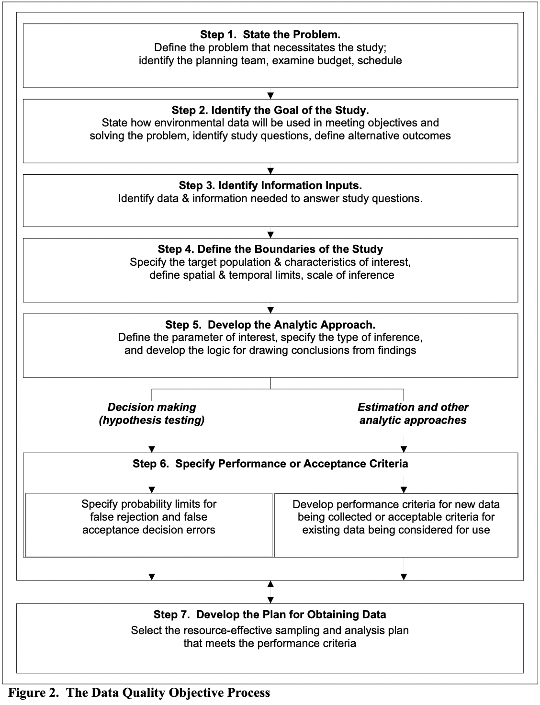
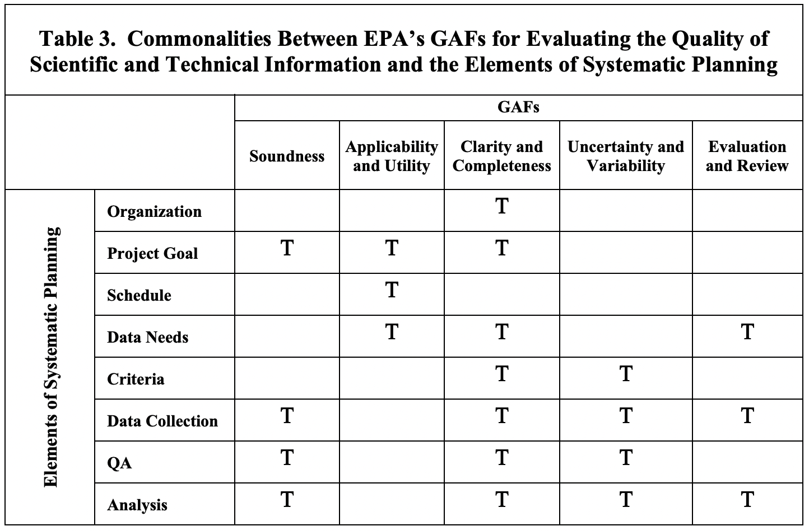
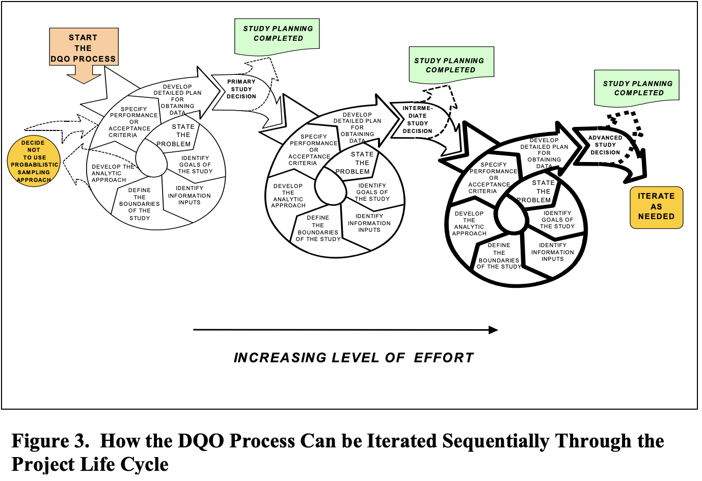
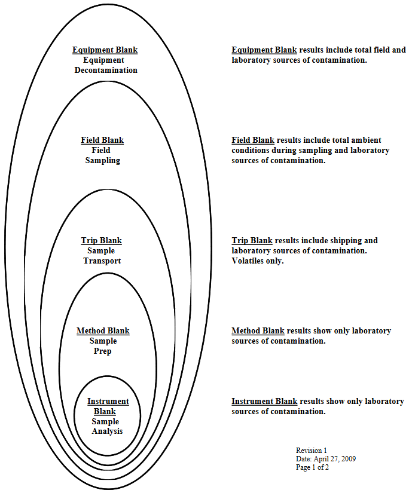

| Element | Description |
|---|---|
| Organization | Identification and involvement of the project manager, sponsoring organization and responsible official, project personnel, stakeholders, scientific experts, etc. (e.g., all customers and suppliers). |
| Project Goal | Description of the project goal, objectives, and study questions and issues. |
| Schedule | Identification of project schedule, resources (including budget), milestones, and any applicable requirements (e.g., regulatory requirements, contractual requirements). |
| Data Needs | Identification of the type of data needed and how the data will be used to support the project’s objectives. |
| Criteria | Determination of the quantity of data needed and specification of performance criteria for measuring quality. |
| Data Collection | Description of how and where the data will be obtained (including existing data) and identification of any constraints on data collection. |
| Quality Assurance (QA) | Specification of needed QA and quality control (QC) activities to assess the quality performance criteria (e.g., QC samples for both field and laboratory, audits, technical assessments, performance evaluations, etc.). |
| Analysis | Description of how the acquired data will be analyzed (either in the field or the laboratory), evaluated (i.e., QA review/verification/validation), and assessed against its intended use and the quality performance criteria. |
Data Management
Data management guidelines and resources
Data Quality
EPA Guidance on Systematic Planning Using the Data Quality Objectives Process
The Data Quality Objective (DQO) Process

Table 1. Elements of Systematic Planning
When specifying the project goal (element #2 in Table 1), a key activity is to determine the key questions which the study will address once data and information are properly collected and analyzed.
Table 2. EPA General Assessment Factors
| Factor | Description |
|---|---|
| Soundness | The extent to which the scientific and technical procedures, measures, methods or models employed to generate the information are reasonable for, and consistent with, the intended application. |
| Applicability and Utility | The extent to which the information is relevant for the Agency’s intended use. |
| Clarity and Completeness | The degree of clarity and completeness with which the data, assumptions, methods, quality assurance, sponsoring organizations and analyses employed to generate the information are documented. |
| Uncertainty and Variability | The extent to which the variability and uncertainty (quantitative and qualitative) in the information or the procedures, measures, methods or models are evaluated and characterized. |
| Evaluation and Review | The extent of independent verification, validation, and peer review of the information or of the procedures, measures, methods or models. |
Systematic Planning & GAF Commonalities
- Achieving clarity in a project’s development becomes straightforward when using systematic planning, as almost every element of the planning process contributes to understanding how the project’s assumptions, methods, and proposed analyses will be conducted.
- Planning for analyzing the data and information before collection clearly meets the intent of the GAFs.
- Clear statements on the goals of the project developed through systematic planning leads to a better understanding of purpose and credibility of the results.
- Systematic planning leads to a clear statement of information needs and how the information will be collected, and leads to transparency in data quality.


Benefits of Using the DQO Process
The interaction amongst a multidisplinary team results in a clear understanding of the problem and the options available. Organizations that have used the DQO Process have found the structured format facilitated good communicaitons, documentation, and data collection design, all of which facilitated rapid peer review and approval.
- The structure of the DQO Process provides a convenient way to document activities and decisions and to communicate the data collection design to others.
- The DQO Process is an effective planning tool that can save resources by making data collection operations more resource-effective.
- The DQO Process enables data users and technical experts to participate collectively in planning and to specify their needs prior to data collection. The DQO Process helps to focus studies by encouraging data users to clarify vague objectives and document clearly how scientific theory motivating this project is applicable to the intended use of the data.
- The DQO Process provides a method for defining performance requirements appropriate for the intended use of the data by considering the consequences of drawing incorrect conclusions and then placing tolerable limits on them.
- The DQO Process encourages good documentation for a model-based approach to investigate the objectives of a project, with discussion on how the key parameters were estimated or derived, and the robustness of the model to small perturbations. Upon implementing the DQO Process, your environmental programs can be strengthened
Data Handling
Resources
Character Encoding
We deal with character encoding issues when importing data to databases all the time. All databases are encoded in UTF-8, and the most common non-ASCII, non-UTF-8 format is Microsoft’s custom encoding, which is CP-1252 (also known as win-1252 and a few other things). The character encoding of a file can’t necessarily be definitively determined by examination, but the Linux command-line tool file generally does a good job. If you want to change the encoding of a file rather than importing it in a known format, the Linux command-line tool iconv will do that for you. There’s a Python library on PyPI named chardet that will also diagnose file encodings.
For data managers, the workflow is to first guess that encoding errors on data import are due to the file being cp-1252. That covers about 90% of cases. Our import tool also automatically diagnoses instances where a file starts with a byte order mark (BOM), which covers most of the rest of the cases. For the remainders, Geany is usually the quickest way to check the file encoding.
Everything that comes out of our databases is always in UTF-8, so I, at least, don’t ordinarily have encoding issues when importing data to R. For those who use data from other sources, it is a good idea to document a recommended workflow and set of tools.
Analytical Chemistry
Summarization
Chemistry data frequently is summarized for use in analyses or for presentation using tables or maps. Summarization is ordinarily performed when there are multiple concentration values measured for a sample, or for a specific location, date, and depth. Multiple concentration values result from field or laboratory replications, from field splits created for quality control evaluations, and sometimes from sample reanalyses. Although field splits and laboratory replicates are created to support data quality assessments, all of the valid results that are produced are informative, are ordinarily stored in the project database, and are used to produce the most accurate possible estimate of the true concentration in a sample. When there are replicate results for a sample, the data will be averaged in a stepwise, or hierarchical, fashion. Because each level of the hierarchy represents a different source of variation, all the results at a single level are averaged together before results are averaged across levels. The different levels of replication, and the source of variation that each represents, are as follows:
- Average across lab replicates
- Average across multiple analyses (if they exist) for the same lab sample. This will average across multiple methods and reanalyses (different SDGs)
- Average across multiple lab samples (if they exist) for the same sample number (split) and lab. Multiple lab samples may exist for the same sample number if the laboratory has created new laboratory sample IDs for reanalyses.
- Average across multiple splits (if they exist) for the same lab and interpretive sample. Multiple sample numbers (splits) may exist for the same lab, or the same sample number may exist for different labs. Splits sent to different labs potentially have an additional source of variability in addition to variability between splits sent to the same lab.
- Average across laboratories for the same main sample. This summarizes data by main sample (sample_id), which is typically the lowest level of data summarization to be used for data interpretation.
By default, data are summarized by successive averaging across these levels of replication, in the order given above. During the averaging process, data validation qualifiers and significant digits must be propagated. The rules for propagating the data validation qualifiers U (undetected), J (estimated), and R (rejected) are as follows:
- If both detected and undetected data are to be averaged, then undetected data lower than the highest detected value will be taken at one-half the detection limit and averaged with the detected data, and the result will be identified as detected. Non-detects that are higher than the highest detected value will be omitted from the average.
- If all data to be averaged are undetected, the result will be taken to be the lowest detection limit, and will be identified as undetected.
- If J-qualified data are averaged with non-J-qualified data, the result will be J-qualified.
- If R-qualified data are averaged with non-R-qualified data, the result will be R-qualified.
Significant digits are propagated so that the place (in the sense of one’s place, ten’s place, etc.) of the least significant digit of the average is equal to the highest place of the least significant digit of any of the values that are averaged.
These rules are built into custom aggregate functions in IDB that use the measurement_result data type.
These default data handling rules will be applied if no project-specific alternate rules are specified. The project manager, project technical staff, and data manager should evaluate, at the start of a project, whether an alternative approach is needed. Alternate data summarization rules should be summarized in the project plan or in the data management plan, if it exists. (Data managers: if not documented elsewhere, record this information in the Data Manager’s Manual.)
Note that the handling of nondetects during hierarchical averaging and the presentation of nondetects in data summaries may be different. Regardless of whether nondetects are taken at half the detection limit or the full detection limit when averaging, the summarized result may be presented with either the full detection limit or half the detection limit. Reporting nondetects at the full detection limit should ordinarily be done when preparing data tables for reports or other deliverables. Data analyses to be conducted by Integral may be carried out using either half or full detection limits. The method of reporting nondetects should be specified when requesting data summaries.
Chemistry
Resources
- Hazardous Waste Test Methods
- National Environmental Methods Index
- Substance Registry Service
- EIM Valid Values
- Verification and Validation
- Qualifiers
- Data Review
- Chemical Lists
- PCBs
- Washington Water Resources Data Defs
- Measurement Basis Conversions
- https://pubs.usgs.gov/wdr/WDR-WA-03-1/pdf/ADR_N.pdf
- http://www.eccsmobilelab.com/resources/literature/?Id=117
- Conversions
TEFs
Chemical Groups
Dioxin & Furans
PCBs
General
PCBs are a group of man-made organic chemicals consisting of carbon, hydrogen and chlorine atoms. The number of chlorine atoms and their location in a PCB molecule determine many of its physical and chemical properties. PCBs have no known taste or smell, and range in consistency from an oil to a waxy solid.
PCBs belong to a broad family of man-made organic chemicals known as chlorinated hydrocarbons. PCBs were domestically manufactured from 1929 until manufacturing was banned in 1979. They have a range of toxicity and vary in consistency from thin, light-colored liquids to yellow or black waxy solids. Due to their non-flammability, chemical stability, high boiling point and electrical insulating properties, PCBs were used in hundreds of industrial and commercial applications including:
- Electrical, heat transfer and hydraulic equipment
- Plasticizers in paints, plastics and rubber products
- Pigments, dyes and carbonless copy paper
- Other industrial applications
Commercial Uses for PCBs
Although no longer commercially produced in the United States, PCBs may be present in products and materials produced before the 1979 PCB ban. Products that may contain PCBs include:
- Transformers and capacitors
- Electrical equipment including voltage regulators, switches, re-closers, bushings, and electromagnets
- Oil used in motors and hydraulic systems
- Old electrical devices or appliances containing PCB capacitors
- Fluorescent light ballasts
- Cable insulation
- Thermal insulation material including fiberglass, felt, foam, and cork
- Adhesives and tapes
- Oil-based paint
- Caulking
- Plastics
- Carbonless copy paper
- Floor finish
The PCBs used in these products were chemical mixtures made up of a variety of individual chlorinated biphenyl components known as congeners. Most commercial PCB mixtures are known in the United States by their industrial trade names, the most common being Arochlor.
Release and Exposure of PCBs
Today, PCBs can still be released into the environment from:
- Poorly maintained hazardous waste sites that contain PCBs
- Illegal or improper dumping of PCB wastes
- Leaks or releases from electrical transformers containing PCBs
- Disposal of PCB-containing consumer products into municipal or other landfills not designed to handle hazardous waste
- Burning some wastes in municipal and industrial incinerators
PCBs do not readily break down once in the environment. They can remain for long periods cycling between air, water and soil. PCBs can be carried long distances and have been found in snow and sea water in areas far from where they were released into the environment. As a consequence, they are found all over the world. In general, the lighter the form of PCB, the further it can be transported from the source of contamination.
PCBs can accumulate in the leaves and above-ground parts of plants and food crops. They are also taken up into the bodies of small organisms and fish. As a result, people who ingest fish may be exposed to PCBs that have bioaccumulated in the fish they are ingesting.
The National Center for Health Statistics, a division of the Centers for Disease Control and Prevention, conducts the National Health and Nutrition Examination Surveys (NHANES). NHANES is a series of U.S. national surveys on the health and nutrition status of the noninstitutionalized civilian population, which includes data collection on selected chemicals. Interviews and physical examinations are conducted with approximately 10,000 people in each two-year survey cycle. PCBs are one of the chemicals where data are available from the NHANES surveys.
PCB Congeners
A PCB congener is any single, unique well-defined chemical compound in the PCB category. The name of a congener specifies the total number of chlorine substituents, and the position of each chlorine. For example: 4,4’-Dichlorobiphenyl is a congener comprising the biphenyl structure with two chlorine substituents - one on each of the #4 carbons of the two rings. In 1980, a numbering system was developed which assigned a sequential number to each of the 209 PCB congeners.
PCB Homologs
Homologs are subcategories of PCB congeners that have equal numbers of chlorine substituents. For example, the tetrachlorobiphenyls are all PCB congeners with exactly 4 chlorine substituents that can be in any arrangement.
PCB Aroclor
Aroclor is a PCB mixture produced from approximately 1930 to 1979. It is one of the most commonly known trade names for PCB mixtures. There are many types of Aroclors and each has a distinguishing suffix number that indicates the degree of chlorination. The numbering standard for the different Aroclors is as follows:
- The first two digits usually refer to the number of carbon atoms in the phenyl rings (for PCBs this is 12)
- The second two numbers indicate the percentage of chlorine by mass in the mixture. For example, the name Aroclor 1254 means that the mixture contains approximately 54% chlorine by weight.
Qualifiers
Labs may apply whatever flags they want to a result. Some data qualifiers are defined by EPA’s Functional Guidelines documents, which describe how data validation is to be conducted, and the use and interpretation of U, J, and R qualifiers is pretty universal (but older standards for Puget Sound data used E instead of J). Because the U, J, and R qualifiers are pretty universal and have implications for data usability, they are the only ones that are represented as Boolean fields in the meas_value column. All lab flags are put into the lab_flags column, and there is no lookup table for them, and there is no defined use for them. Similarly, the validator qualifiers (U, J, R, and possibly others) are put in the validator_flags column. If any of those three common qualifiers is in the validator_flags column, then the corresponding flags in meas_value should be set. The lab_conc_qual column is something of a relic, left over from the days when data were commonly provided in EPA’s Contract Laboratory Program (CLP) data format, which had a corresponding column. The lab_conc_qual column was meant to either contain “U” or be null. We don’t ordinarily use that column any more. Of the qualifiers you listed above, other than U, J, and R, N is commonly used to flag a tentatively identified compound, which means that the analyte code itself is uncertain. The d_labresult.tic column is meant to hold that information. The tic column is not part of the measurement_result data type because it is not used in any way during data aggregation (averaging or summing). I see that Jerry added other flags and qualifiers to the e_concqual table, but needn’t—really shouldn’t—be there. The e_concqual dictionary should have only “U” defined. It may seem odd to define a lookup table for only one value when a check constraint on the concentration qualifier columns could be used instead, but it’s easier to check relational constraints than to check check constraints programmatically.
Duplicates
“Duplicate” is a somewhat ambiguous term, but in practice it most commonly refers to field duplicates, which we ordinarily refer to as splits to avoid that ambiguity. Some QC data, particularly spikes, are frequently duplicated, so when we have lab QC data we may have values for spikes and spike duplicates. When we receive lab results in one big flat table that includes both analytical results for natural samples and results of lab QC samples, the word or code “DUP” in a column header or table cell could mean a couple of different things. Without seeing the original data source, I’m not sure where the “DUP” code in the “labqc_samp” column of your “d_labsample” table came from. I’m going to assume that it refers to a field duplicate, and not a spike duplicate.
Ideally, samples are submitted to the laboratory “blind” so that the laboratory does not know which field samples are duplicates of one another. This is to prevent them from seeing that there’s a lot of variation between some pair of duplicates and deciding to re-run one or both of them. If the lab is producing highly variable data, we don’t want them to be able to hide it. Unfortunately, many field sampling programs use a suffix of “-D” or “-DUP” or something like that on the sample ID, so the lab knows which samples are field duplicates. If they know, they may pass that information back in their EDD.
Although field duplicates are used as a QC check on laboratory performance, they are not lab QC samples themselves. They are just normal field samples (which have been split), and don’t need to have a laboratory QC sample ID assigned to them. Thus, field duplicates should not be listed in the “d_labqcsamp” table, so that table looks fine as it appears below. The same is true for the “d_labresult” table.
There are a couple of things to be changed about the “d_labsample” table as shown below:
- The values in the “labqc_samp” column should be identifiers that appear in the “d_labqcsamp” table, not codes. The codes for the lab QC type should be in the d_labqcsamp.qc_type column, and neither “Natural” nor “DUP” should be used there.
- The “d_labsample” table should have values in the “study_id” and “sample_no” columns, or a value in the “labqc_samp” column, but not both. There are other invalid combinations of columns also. The “d_labsample” table may have any one of the following tables as a parent: d_sampsplit, d_fldqcsplit, d_labqcsamp, d_bioaccum_samp, d_samptreatsplit, or d_bioasrepsamp. The “ck_one_sample” check constraint on the table enforces this rule. Check constraints like this are not run by the upsert scripts, so a set of staged data may pass all the checks performed by the upsert script and yet the INSERT into d_labsample will fail.
Measurement Basis
R tool
General
- Data for soil and sediment are almost always reported on a dry-weight basis. If there’s anything to indicate a different basis, that deserves a closer look. Almost the only legitimate reason for a different basis for soil or sediment samples is when a leaching procedure has been applied (e.g., the Toxicity Characteristic Leaching Procedure, or TCLP); in those cases the data may be reported as the concentration in the leachate, so the basis may be “Wet” or “Whole” or “Unfiltered” – anything indicating an unfractionated liquid sample.
- Data for tissues should ordinarily be reported in wet weight. Organisms’ homeostasis means that they maintain a nearly constant moisture content in their tissues, whereas the same is not true of materials like soil or sediment. If tissue data are reported in dry weight, check it carefully: labs can be sloppy about that.
- Water data are where things can be complex, because often water samples are filtered or centrifuged to remove particulates, which results in the water samples have a ‘dissolved’ basis. If the particulates are analyzed, and the results are then expressed in terms of the volume of the original sample, then the data will have a ‘particulate’ basis. Unfiltered, or whole, water, should have a basis of ‘Unfilt’, ‘Whole’, or sometimes ‘Wet’. Either of the first two of these are preferred, “Wet” is better used as a counterpart to “Dry” for soil, sediment, or tissue samples.
- There are variations in the way things have been done in different databases. You may find that the measurement basis code for whole water samples differs from one to another, as in the third bullet above.
- IDB v.8 now has the “fraction” code, which is intended to be used to distinguish dissolved, particulate, and whole fractions of a water sample. In IDB v.8, the measurement basis for water samples will almost always be ‘Whole’. Sometimes sediment or soil samples are fractionated too, e.g., by sieving, and the fraction code should be used in those cases too, so the measurement basis will always be ‘dry’ in those cases.
- There is an implicit association between measurement bases and units. For example, if the measurement basis is “Dry”, the units should not be “mg/L” because “…/L” implies a liquid, not a solid.
- The measurement basis refers to the form of the sample material, which is represented in the denominator of concentration units. So codes of “Sediment” “Arsenic”, “mg/kg”, “Dry” should be read as “mg of arsenic per kg of dry sediment.”
Wet Weight
Wet weight (or as-is) basis means no calculation has been made to compensate for the moisture content of a sample. Wet weight refers to the weight of animal tissue or other substance including its contained water. (See also “Dry weight”)
Dry Weight
Dry weight basis means the lab has measured moisture content of a sample and calculated concentrations based on the percent solids present. Dry weight refers to the weight of animal tissue after it has been dried in an oven at 65°C until a constant weight is achieved. Dry weight represents total organic and inorganic matter in the tissue. (See also “Wet weight”).
Lipid
Lipid is any one of a family of compounds that are insoluble in water and that make up one of the principal components of living cells. Lipids include fats, oils, waxes, and steroids. Many environmental contaminants such as organochlorine pesticides are lipophilic.
Conversions
Wet to Dry
\[DryWt = \frac{WetWt}{Percent Solids} * 100\]
Dry to Wet
\[WetWt = DryWt * \frac{PercentSolids}{100}\]
Organic Carbon Normalization
\[OCnorm = \frac{DryWt}{\frac{PercentTOC}{100}}\]
PercentSolids = percentage (no decimal)
Resource

Analytical Blanks
Trip Blank
The trip blank is designed to identify levels of contamination from the exposure of the reagent or sorbent bed to the same atmospheres exposed to the analyte reagent or sorbent bed. The trip blank is prepared in the laboratory with the other reagents or adsorbents prior to shipping to the field. However, the trip blank is never exposed to the field atmospheres. It is simply sent along with the field samples to and from the site. The trip blank identified areas of exposure such as shipping temperatures and pressures, laboratory preparation of field samples and laboratory preparation of field samples for analysis.
Field Blank
The field blank is similar to the trip blank in that it is also prepared during the preparation of the field reagents or adsorbents. However, the field blank is exposed to the same atmospheres in the field as the field samples. This means that the field blank is opened during the charging of impingers or sorbents in the sample train. The field blank is also exposed during the exchanging of cartridges in SW-846, Method 0030 or when field reagents are being exchanged during a test run. In summary, field blanks consist of additional sample collection media (e.g., sorbent tubes, reagents, filters) which are transported to the monitoring site, exposed briefly at the site when the samples are exposed (but no stack gas is actually pulled through these blanks), and transported back to the laboratory for analysis, similar to a field sample. At least one field blank should be collected and analyzed for each test series.
Laboratory Blank
The laboratory blank is a sample of the reagents or sorbents used during the sample train reagent preparation or recovery. The laboratory blank is a sample of the extraction solvent, the rinses used during sample recovery, or a sample from the batch of sorbent used to preparing sampling cartridges. Laboratory blanks include both method blanks and instrument blanks. Method blanks are carried through all steps of the measurement process (from extraction through analysis). A method blank is typically analyzed with each sample batch. Instrument blanks are used to demonstrate that an instrument system is free of contamination. Instrument blanks are typically analyzed prior to sample analysis and following the analysis of highly contaminated samples.
Reagent Blank
The reagent blank is a sample of the solvents used during recovery of the sample train after the test is completed. You recall, reagent blanks for both multi-metal and chromium +6 require that the reagent blank be the same volume as the renses used to recover the samples, from probe to impinger. This is because the blank value is substracted from the sample to obtain a final concentration.
Diagram

Detection Limits
What affects detection limits?
- Sample size
- Concentration of other constituents
- Sample clean-up
- Methodology
- Lab Performance
- Experience
- Extraction technique
- Instrument type and maintenance
detection_limit - the lowest possible value an instrument/method can sense a compound is present (think of it like a whisper - you can barely hear it, but know its there). This is better known as the “method detection limit”
quantification_limit - the limit in which an instrument/method can actually start to quantify the amount of something which is present. If the result is between the detection_limit and the quantification_limit, the result is estimated, because the instrument/method cant confidently identify the amount of something until it reaches the quantification_limit.
reporting_limit - usually project or dataset specific. this limit is used for data analysis/statistics. the reporting_limit is equal to either the detection_limit or quantification_limit. This is better known as the “reporting detection limit”.
Method Detection Limit (MDL)
- Statistically determined
- The minimum concentration that can be measured with 99% confidence that the concentration is greater than zero
- Concentrations near MDL are estimates
- Laboratory, instrument, matrix, method, and analyte specific
- Concentrations at MDL expected to be a false positive 1% of the time, but false negatives 50% of the time
Method Reporting Limit (MRL)
- May also be referred to as QL (quantitation limit), sample quantitation limit, or just RL (reporting limit)
- Determined by the lowest point of the calibration
- Not as specific as MDL, labs can adust
- Concentrations at MRL can be reliably quantified
- MRL > MDL
- Also laboratory, instrument, matrix, method, & analyte specific
MDL & MRL Relationship

Other Detection Limits
PQL
- Considered to be lowest concentration that can be reliably quantified by a method
- Limit of Detection (LOD); Lowest concentration that can be detected with a 1% false negative rate.
- Generally 2x to 3X MDL
- Limit of Quantitation (LOQ); similar to MRL
PCDD/F & PCB specific
2.5 times signal to noise
- EQL: Estimated Quantitation Limit
- EDL: Estimated Detection Limit
- SDL: Sample Detection Limit
- EMPC
- Estimated Maximum Possible Concentration (EMPC)
- Peak present but not all of the identification criteria is met
- Always greater than MDL, may be greater than MRL
- Generally treated a non-detect in TEQ calculations
- EMPCs can present data management difficulties and need to be reviewed in QC checks